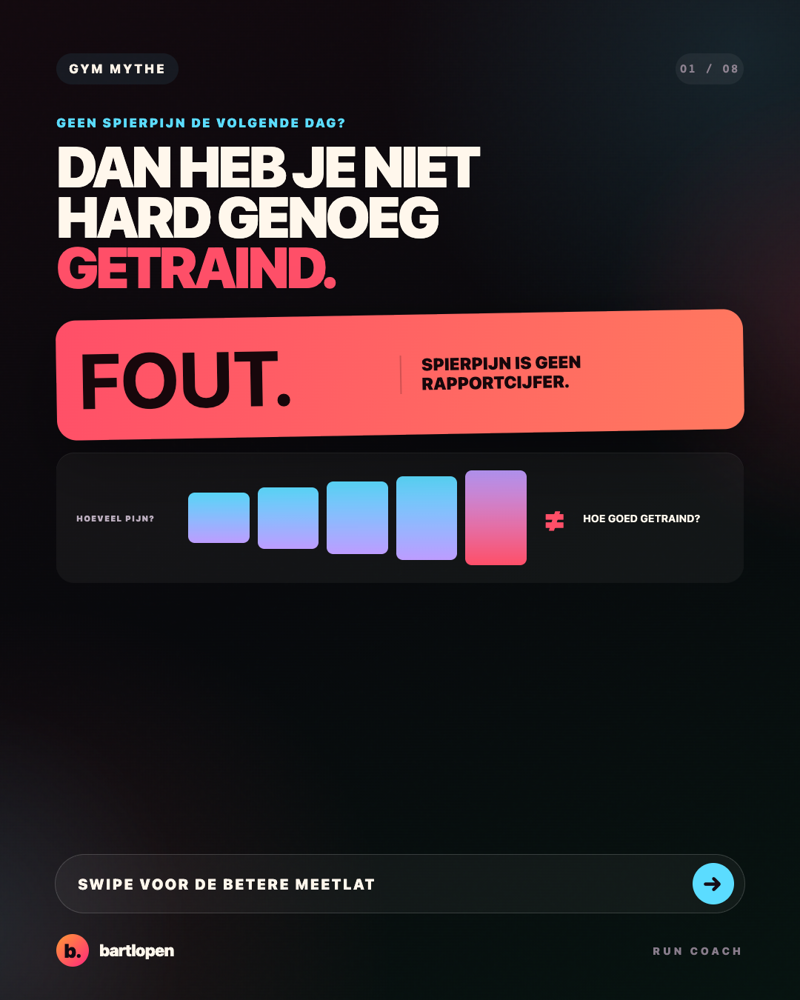
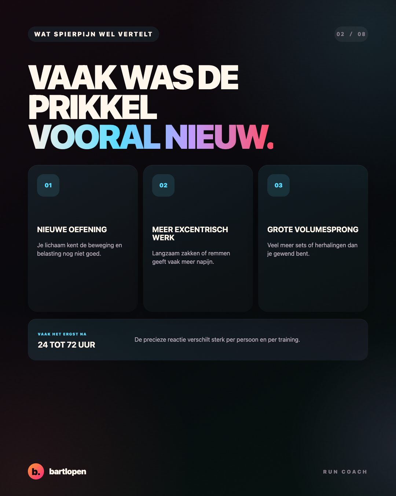
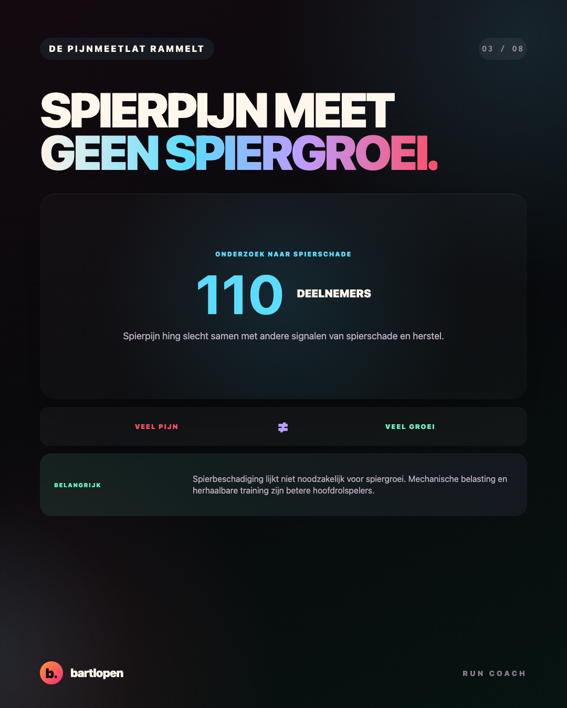
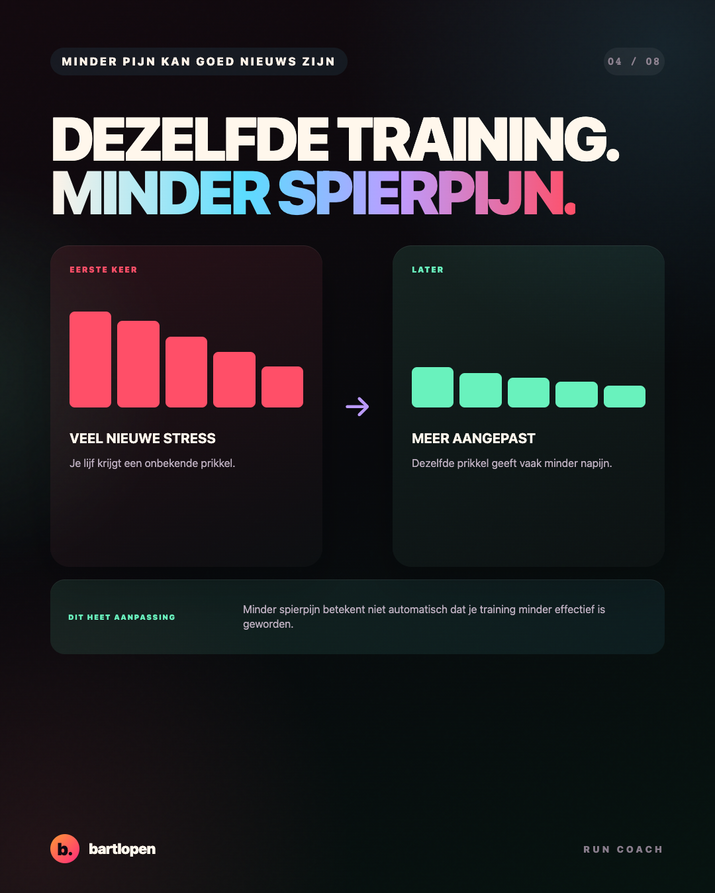
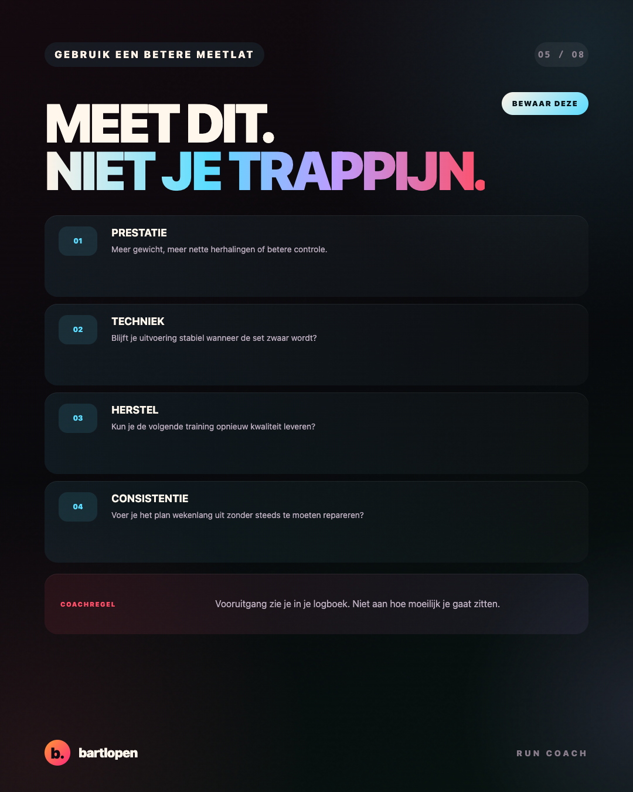
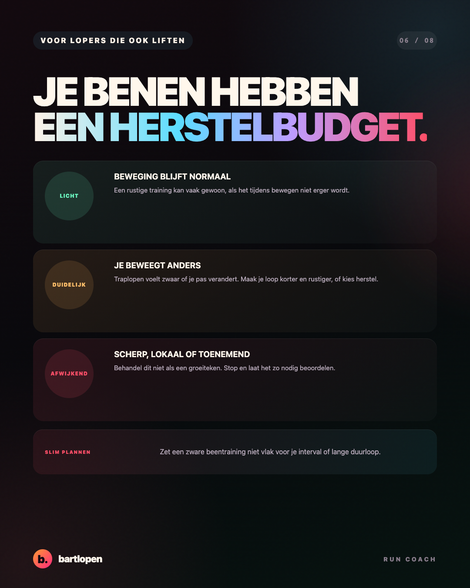
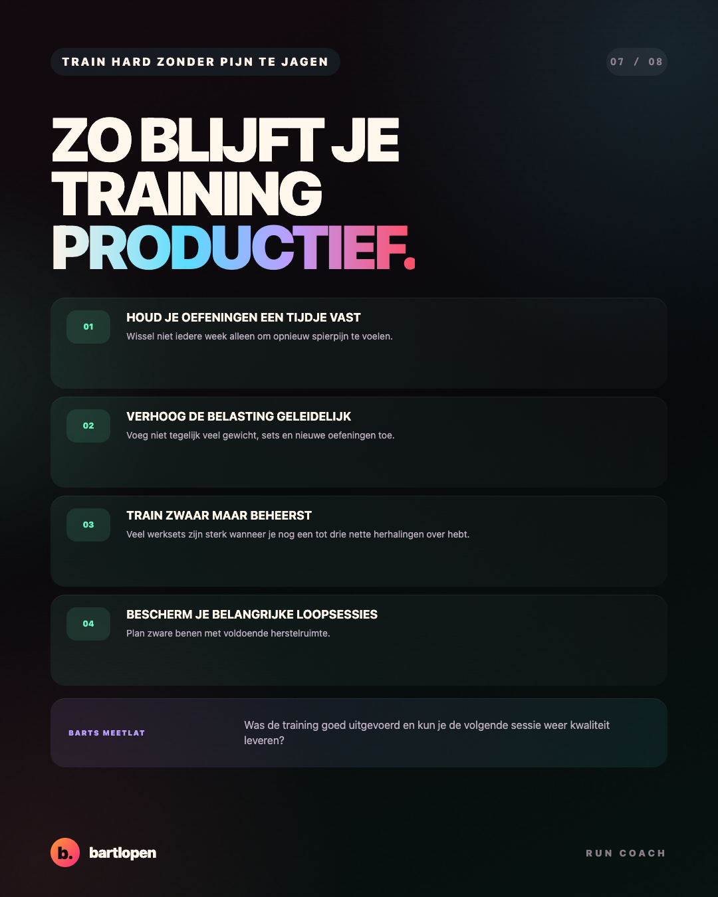
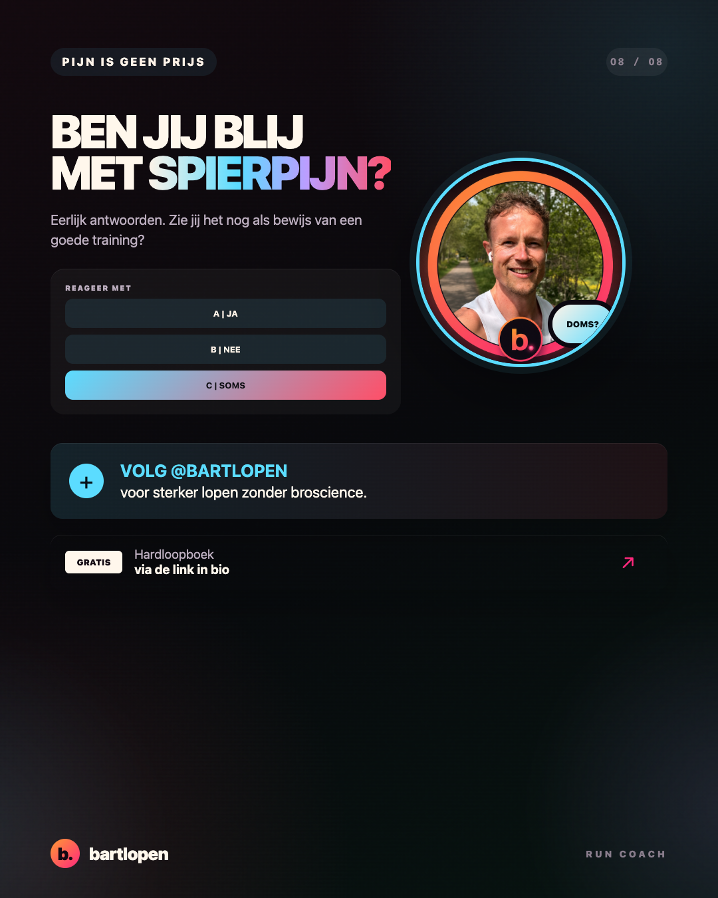

SLIDE 01 ↗Spierpijn is
geen groeimeter
Acht heldere slides over spierpijn, trainingskwaliteit en herstel voor sporters die hardlopen met krachttraining combineren.

SLIDE 02 ↗
SLIDE 03 ↗
SLIDE 04 ↗
SLIDE 05 ↗
SLIDE 06 ↗
SLIDE 07 ↗
SLIDE 08 ↗Caption
GEEN SPIERPIJN? JE TRAINING TELT NOG STEEDS. 👀 Spierpijn is geen rapportcijfer voor spiergroei. Je voelt vaak meer napijn na een nieuwe oefening, extra nadruk op het zakken of een plotselinge sprong in trainingsvolume. Wanneer je lichaam aan dezelfde training gewend raakt, neemt die spierpijn meestal af. Dat is aanpassing, geen bewijs dat je training niet meer werkt. Kijk liever naar deze vier signalen: 📈 meer gewicht of nette herhalingen 🎯 stabiele techniek 🔋 voldoende herstel voor je volgende training 📅 wekenlang consistent kunnen trainen Voor hardlopers is dit extra belangrijk. Een beentraining die je looptechniek verandert of je belangrijke loopsessie sloopt, was waarschijnlijk duurder dan nodig. Mijn coachregel: beoordeel een training op uitvoering, vooruitgang en herstel. Niet op hoeveel pijn je hebt bij het traplopen. UITDAGING: houd vier weken je prestaties en spierpijn bij. Kijk daarna welk getal werkelijk laat zien dat je sterker wordt. Zie jij spierpijn nog als bewijs van een goede training: A ja, B nee of C soms? 👇 #spierpijn #krachttraining #hardlopen #hybridtraining #gymtips #herstel #bartlopen
Bronnen: onderzoek waaruit blijkt dat spierpijn slecht samenhangt met andere signalen van spierschade, een review over prikkels voor spiergroei, onderzoek naar het beschermende effect van een herhaalde trainingsprikkel, de acute invloed van krachttraining bij hardlopers en de ACSM-richtlijn voor krachttraining uit 2026.